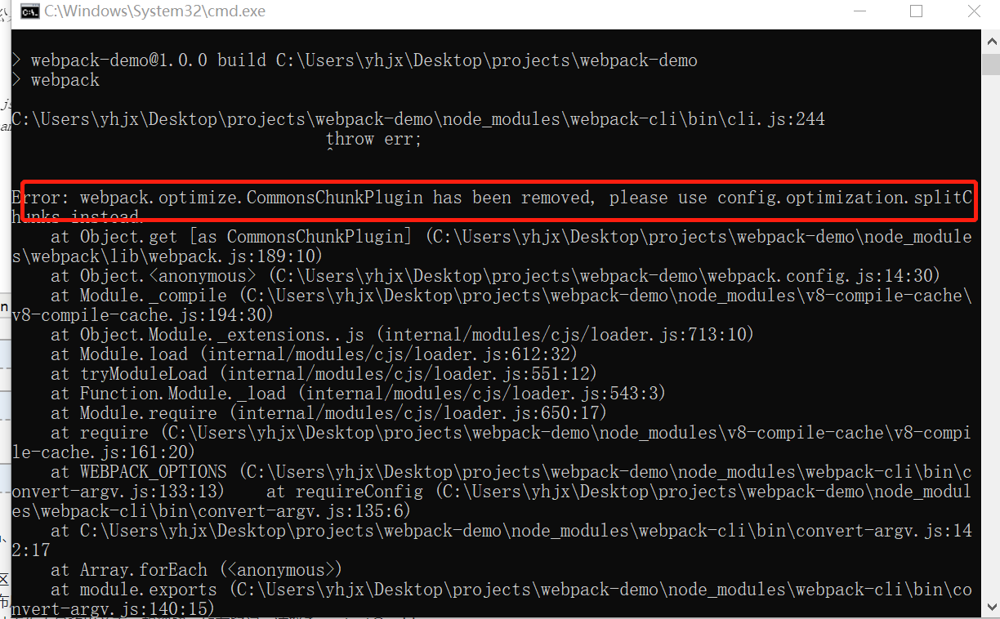
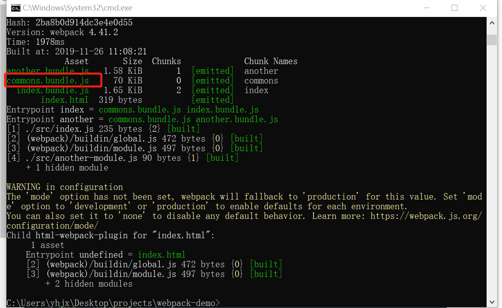

1.webpack.config.js中添加：
const path = require('path');
+ const webpack = require('webpack');
const HTMLWebpackPlugin = require('html-webpack-plugin');
module.exports = {
entry: {
index: './src/index.js',
another: './src/another-module.js'
},
plugins: [
new HTMLWebpackPlugin({
title: 'Code Splitting'
- })
+ }),
+ new webpack.optimize.CommonsChunkPlugin({
+ name: 'common' // 指定公共 bundle 的名称。
+ })
],
output: {
filename: '[name].bundle.js',
path: path.resolve(__dirname, 'dist')
}
};
2.然后就遇到了一个问题，还给出了一个解决方案，需要去查看文档中的插件章节

//optimization与plugins同级
optimization: {
splitChunks: {
cacheGroups: {
commons: {
name: "commons",
chunks: "initial",
minChunks: 2
}
}
}
},
3.运行npm run build，如果有公共部分可得到common.bundle.js文件，如果没有则不会生成这个文件
